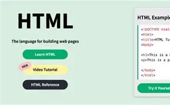

Hyper Text Mark-up Language (HTML)
HTML5 is the current markup language standard that structures web content, defines meaningful sections (semantics), and provides native multimedia/APIs without plugins. Here's exactly what it does and how developers use it
What HTML5 Actually Does (Core Functions)

- Structures Content →Creates document outline with semantic hierarchy
- Embeds Media→ Native audio/video without Flash
- Draws Graphics →Canvas for games/charts/animations
- Stores Data →LocalStorage (5MB+) vs cookies (4KB)
- Handles Forms →Validation, date pickers, progress bars
- Adds Interactivity→ Drag-drop, geolocation, offline apps
Features and APIs
Semantic tags ; Canvas 2D/WebGL; Media (video/audio); Offline (AppCache); Drag-drop; Web Storage (5MB+ vs. cookies); Microdata/JSON-LD; Shadow DOM.